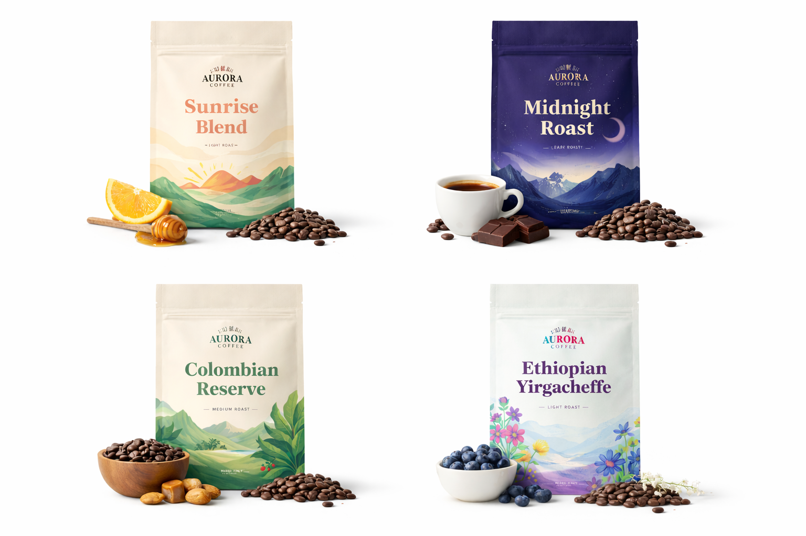

Aroura Coffee Roasters
“Join the Aurora Coffee Club”
Sign up for exclusive roasts, brewing tips, and special discounts delivered straight to your inbox.
Testimonials
“Aurora’s Sunrise Blend is the only reason I wake up willingly before 7 AM.”
— Maya L., Seattle“I tried the Midnight Roast once and now every other coffee tastes like disappointment.”
— Daniel K., Denver
“At Aurora Coffee Roasters, we believe great coffee starts with great care.”
Every bean we roast is ethically sourced from farmers who share our commitment to sustainability,
quality, and craftsmanship. Through small-batch roasting and thoughtful sourcing, we aim to bring
exceptional coffee experiences to every cup.
Because great mornings deserve great coffee.